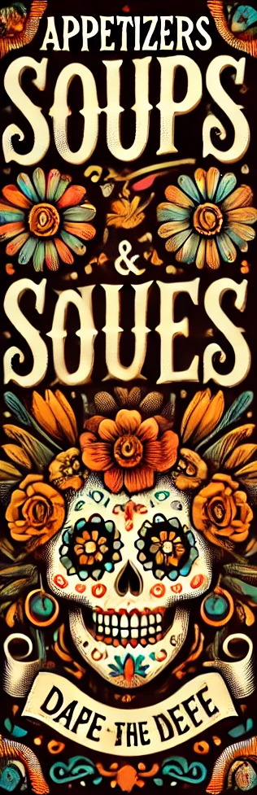
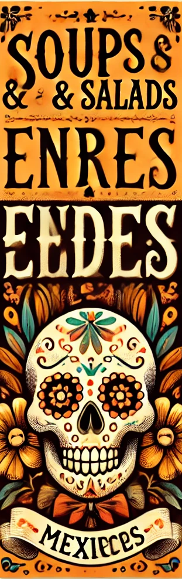
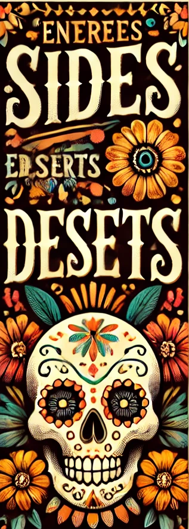
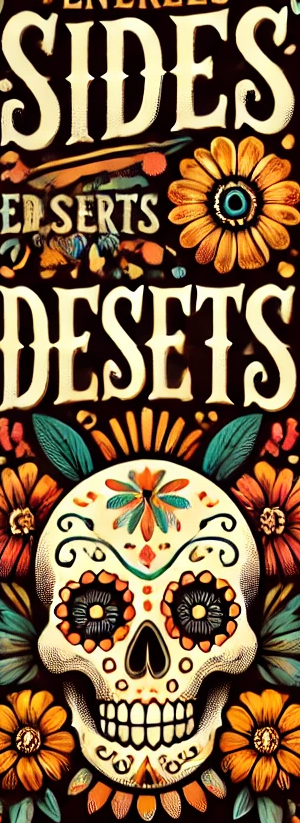
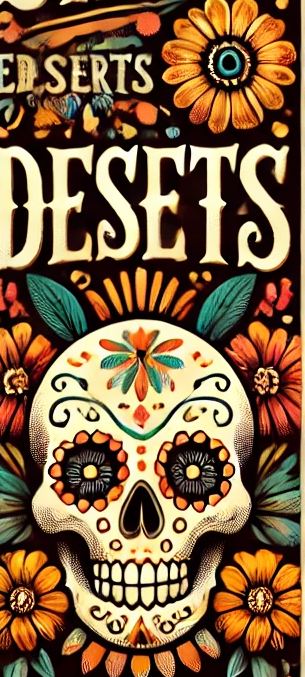
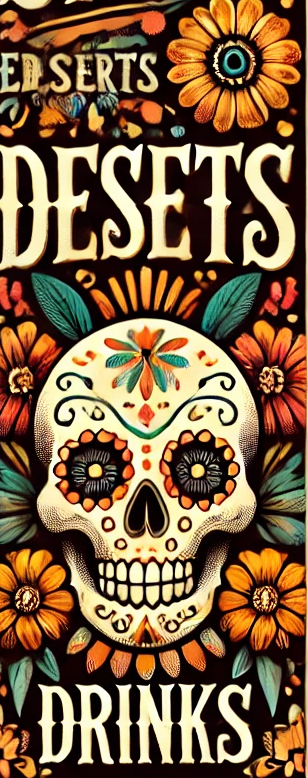

Welcome to Our Café
Appetizers
#
#
#
#
#
#
#

La Catrina's Guacamole - A classic guacamole named after the iconic Día de los Muertos figure.
Ofrenda Nachos - "Ofrenda" refers to the offerings placed on altars during the celebration.
Calaveras Empanadas - "Calaveras" means "skulls," which are central to the holiday's imagery.
Pan de Muerto Bites - Inspired by the traditional "bread of the dead," these could be small, sweet bites.

Sopa de los Santos - A warm, hearty soup named after the saints celebrated during the holiday.
Cempasúchil Salad - Named after the marigold flower, which is heavily associated with Día de los Muertos.
Tlaloc's Tortilla Soup - Tlaloc is the Aztec god of rain, a nod to the rich cultural history of the celebration.

Mole de la Muerte - A rich, flavorful mole dish, with "de la Muerte" highlighting its connection to the day.
Tacos de los Difuntos - "Difuntos" means "departed," tying the dish to the spirits honored during Día de los Muertos.
Rellenos de la Vida - A dish that contrasts with "de la Muerte," celebrating life and the cycle of death and rebirth.
Carnitas del Cielo - "Del Cielo" means "from the heavens," representing the spirits.

Altar Rice & Beans - Sides named after the altars (altares) that are central to Día de los Muertos.
Cempasúchil Salsa - A bright, tangy salsa inspired by the marigold flower.

Calavera de Azúcar - A sweet treat named after the sugar skulls (calaveras) often made for the holiday.
Flan de los Recuerdos - "Recuerdos" means "memories," tying the dish to the remembrance aspect of Día de los Muertos.
Noche de Muertos Churros - Churros served with a dark chocolate dipping sauce, "Noche de Muertos" meaning "Night of the Dead."

Espíritu Margarita - "Espíritu" means "spirit," tying the drink to the spirits honored during the holiday.
Horchata del Cielo - A refreshing horchata, with "del Cielo" linking it to the heavenly aspect of Día de los Muertos.
Cempasúchil Punch - A vibrant punch named after the marigold, central to Día de los Muertos decorations.